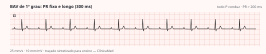
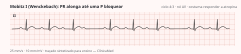
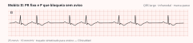
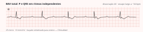

Cardiologia · 69 min · ACC/AHA/HRS 2018 · monografia
Bradicardia é achado, não diagnóstico. Três perguntas resolvem quase todo caso — o paciente está instável, existe causa reversível, e o bloqueio é nodal ou infranodal — e é a terceira que separa observar de implantar. A diretriz americana de 2018 é radical num ponto que a prova adora: no bloqueio infranodal, o marca-passo está indicado independentemente de sintoma; na disfunção do nó sinusal, sem sintoma correlacionado não há indicação.
A diretriz abre com definições porque metade dos erros de conduta nasce de nomear errado o traçado:
| Termo | Definição da diretriz |
|---|---|
| Bradicardia sinusal | Frequência sinusal <50 bpm |
| Pausa sinusal | Despolarização sinusal mais de 3 segundos depois da última atrial |
| Bloqueio sinoatrial | Condução bloqueada entre nó sinusal e átrio; batimentos agrupados e pausas |
| Síndrome bradi-taqui | Bradicardia sinusal, ritmo ectópico lento ou pausa alternando com taquicardia atrial, flutter ou fibrilação; a taquicardia suprime o automatismo sinusal e gera pausa à terminação |
| Incompetência cronotrópica | Não elevar a frequência conforme a demanda; na maioria dos estudos, falha em atingir 80% da reserva cronotrópica ou da frequência máxima prevista (220 − idade) |
| Bloqueio infranodal | Bloqueio que a evidência clínica ou eletrofisiológica situa distal ao nó; os graus estão definidos na seção 5 |
| BAV vagal | Bloqueio mediado por tônus parassimpático alto |
Instabilidade é hipotensão, rebaixamento, dor isquêmica, choque e insuficiência cardíaca aguda. O instável recebe tratamento; o estável, investigação — a diretriz é explícita ao dizer que a maioria dos pacientes com disfunção sinusal chega estável e não requer terapia aguda.
| Recomendação | Classe · Nível |
|---|---|
| Disfunção do nó sinusal com sintoma ou instabilidade: atropina é razoável | IIaC-LD |
| BAV de 2º ou 3º grau de nível nodal com sintoma ou instabilidade: atropina é razoável | IIaC-LD |
| Com sintoma ou instabilidade e baixa probabilidade de isquemia, isoproterenol, dopamina, dobutamina ou adrenalina podem ser considerados | IIbB-NR |
| BAV de 2º ou 3º grau do infarto inferior: aminofilina IV pode ser considerada | IIbC-LD |
| Transplantado cardíaco sem reinervação: não usar atropina na bradicardia sinusal | III: DanoC-LD |
flowchart TD
A["Bradicardia documentada"] --> B{"Instável?
hipotensão · rebaixamento
dor isquêmica · choque"}
B -->|"não"| C["Investigar sem tratar
correlacionar sintoma e ritmo
procurar causa reversível"]
B -->|"sim"| D["Atropina 0,5 a 1 mg IV
repetir a cada 3 a 5 min · máximo 3 mg"]
D --> E{"Respondeu?"}
E -->|"sim"| F["Tratar a causa
e reavaliar indicação de marca-passo"]
E -->|"não"| G{"QRS largo ou bloqueio infranodal
ou transplantado?"}
G -->|"sim"| H["Não insistir na atropina
ir direto a catecolamina e estimulação"]
G -->|"não"| H
H --> I["Dopamina 5 a 20 mcg/kg/min
adrenalina 2 a 10 mcg/min
ou isoproterenol 1 a 20 mcg/min"]
I --> J["Marca-passo TRANSCUTÂNEO
checar CAPTURA MECÂNICA no pulso"]
J --> K["Marca-passo TRANSVENOSO
se refratário ou dependência prolongada"]
K --> L["Procurar causa reversível
fármaco · potássio · isquemia · tireoide"]
Implantar dispositivo permanente por causa temporária é erro definitivo. Mas a diretriz corrige uma crença: a maior parte das causas ditas reversíveis não reverte, e esses pacientes acabam precisando de marca-passo.
| Grupo | Exemplos citados na diretriz |
|---|---|
| Fármacos e toxinas | Betabloqueador, verapamil, diltiazem, digoxina, antiarrítmicos, lítio, metildopa, cisplatina; organofosforado, cocaína |
| Eletrólitos e metabólicas | Hipercalemia, hipocalemia, hipoglicemia, acidose, hipóxia, hipercapnia, hipotermia, hipotireoidismo |
| Isquemia | Infarto agudo, sobretudo o de parede inferior |
| Infecção e inflamação | Chagas, Lyme, difteria, endocardite, miocardite, sarcoidose, toxoplasmose, leptospirose, dengue |
| Infiltrativas | Amiloidose, hemocromatose, linfoma |
| Autonômicas | Hipersensibilidade do seio carotídeo, síncope neuromediada e situacional, condicionamento físico, sono com ou sem apneia, hipertensão intracraniana |
| Cirúrgicas e procedimentos | Troca valvar, Maze, revascularização, ablação, transcateter |
| Reumatológicas | Artrite reumatoide, esclerodermia, lúpus |
| Recomendação | Classe · Nível |
|---|---|
| Disfunção do nó sinusal sintomática: avaliar e tratar causas reversíveis | IC-EO |
| Causa transitória de BAV, como carditis de Lyme ou intoxicação: tratar e dar suporte — inclusive marca-passo temporário — antes de decidir o definitivo | IB-NR |
| BAV sintomático de 2º ou 3º grau em dose estável e necessária de antiarrítmico ou betabloqueador: ir ao definitivo sem esperar a retirada | IIaB-NR |
| BAV de 2º ou 3º grau por sarcoidose cardíaca: implantar — com desfibrilador se indicado e sobrevida >1 ano — sem observar à espera de reversão | IIaB-NR |
| BAV sintomático com alteração tireoidiana sem mixedema: definitivo sem mais observação pode ser considerado | IIbC-LD |
| Laboratório guiado pela suspeita — tireoide, sorologia de Lyme, potássio, pH | IIaC-LD |
Reúne bradicardia sinusal inapropriada, ritmo atrial ectópico lento, pausas, bloqueio sinoatrial, incompetência cronotrópica e a síndrome bradi-taqui. É a indicação mais comum de marca-passo, seguida do bloqueio atrioventricular, e é aqui que a diretriz é mais restritiva: como a disfunção sinusal não ameaça a vida, o benefício do dispositivo é sintoma e qualidade de vida — sem sintoma correlacionado, o implante só entrega risco cirúrgico e eletrodo, com complicações de 3% a 7%.
| Recomendação | Classe · Nível |
|---|---|
| Bradicardia ou pausas assintomáticas por tônus parassimpático fisiológico: não implantar | III: DanoC-LD |
| Bradicardia ou pausas do sono: não implantar, salvo outra indicação | III: DanoC-LD |
| Disfunção sinusal assintomática, ou sintoma documentado sem bradicardia nem incompetência cronotrópica: não implantar | III: DanoC-LD |
| Sintoma diretamente atribuível à disfunção do nó sinusal | IC-LD |
| Bradicardia sintomática por terapia necessária e sem alternativa: marca-passo para manter o tratamento | IC-EO |
| Síndrome bradi-taqui com sintoma atribuível à bradicardia | IIaC-EO |
| Incompetência cronotrópica sintomática: marca-passo com resposta de frequência | IIaC-EO |
| Sintoma provavelmente da disfunção sinusal: teofilina oral de teste pode ser considerada, para prever o efeito do marca-passo | IIbC-LD |




| Grau | Reconhecimento | Nível provável | O que decide a conduta |
|---|---|---|---|
| 1º grau | PR >200 ms, todas as P conduzem | Nodal na maioria | Benigno; com PR muito longo e sintoma, marca-passo IIa |
| 2º grau Mobitz I | PR alarga até uma P bloquear | Nodal, sobretudo com QRS estreito | Observar; marca-passo só com sintoma claramente atribuível (IIa) |
| 2º grau Mobitz II | P bloqueada com PR constante | Infranodal | Marca-passo independentemente de sintoma (I) |
| 2:1 | Uma P conduz, a outra não | Indeterminado | Exige manobras ou estudo eletrofisiológico para localizar |
| Avançado | ≥2 P consecutivas bloqueadas, com alguma condução | Em geral infranodal | Marca-passo independentemente de sintoma (I) |
| 3º grau | Dissociação completa, com escape | Conforme o escape | Marca-passo independentemente de sintoma (classe I), salvo causa reversível |
Mobitz I é comum em pessoas ativas e costuma ser assintomático; quando surge ao exercício, muda de leitura, porque o esforço deveria melhorar a condução nodal. Na síncope com investigação inicial negativa, o bloqueio intermitente às vezes só aparece na monitorização prolongada: 8% dos que tinham síncope com eletrocardiograma e eco normais tinham bloqueio paroxístico idiopático, e entre os com bloqueio bifascicular ou de ramo, 61% tinham alteração His-Purkinje relevante ao estudo eletrofisiológico.
Isso é Mobitz II — P bloqueada com PR constante antes e depois — com QRS largo, ou seja, doença do His-Purkinje. A recomendação é classe I, independentemente de sintoma: Mobitz II adquirido, bloqueio avançado e bloqueio total não atribuíveis a causa reversível ou fisiológica indicam marca-passo definitivo. A razão é o modo de falhar — o bloqueio infranodal progride para completo de forma súbita, com escape lento ou ausente. As séries antigas de história natural documentaram síncope recorrente e insuficiência cardíaca nos não tratados, e melhora de sobrevida com o marca-passo.
Toda a conduta depende dessa distinção: o nó é ricamente inervado pelo vago e sensível a catecolaminas; o His-Purkinje, praticamente não. Daí as manobras de cabeceira.
Nodal. O exercício facilita a condução no nó — se o bloqueio melhora ao esforço ele é nodal, se piora é infranodal —, e o QRS estreito reforça. Isso tira o paciente da indicação classe I automática do infranodal e o põe na faixa em que só o sintoma claramente atribuível justifica marca-passo. O teste ergométrico no BAV 2:1 de nível indeterminado é IIa, C-LD, exatamente para isso.
| Padrão | Critérios da diretriz |
|---|---|
| Ramo direito | QRS ≥120 ms; rsr′ ou rSR′ em V1–V2, R′ mais largo que o R inicial; S mais longa que a R ou >40 ms em D1 e V6; pico de R >50 ms em V1 |
| Ramo esquerdo | QRS ≥120 ms; R alargada ou entalhada em D1, aVL, V5 e V6; sem Q em D1, V5 e V6; pico de R >60 ms em V5–V6; ST e T opostos ao QRS |
| Incompletos | Mesma morfologia, QRS de 110 a 119 ms |
| Hemibloqueio anterior | QRS <120 ms; eixo entre −45° e −90°; qR em aVL com pico de R ≥45 ms; rS em D2, D3 e aVF |
| Hemibloqueio posterior | QRS <120 ms; eixo entre 90° e 180°; rS em D1 e aVL; qR em D3 e aVF |
| Recomendação | Classe · Nível |
|---|---|
| Ramo esquerdo novo: ecocardiograma para excluir cardiopatia estrutural | IB-NR |
| Síncope com bloqueio de ramo e, ao estudo eletrofisiológico, HV ≥70 ms ou bloqueio infranodal | IC-LD |
| Bloqueio de ramo alternante — QRS alternando morfologia esquerda e direita | IC-LD |
| Sintoma de bradicardia intermitente com doença de condução e sem BAV documentado: estudo eletrofisiológico é razoável | IIaB-NR |
| Ramo esquerdo com suspeita estrutural e eco normal: imagem avançada — ressonância, tomografia ou nuclear — é razoável | IIaC-LD |
| Insuficiência cardíaca com fração de 36% a 50% e ramo esquerdo com QRS ≥150 ms: ressincronização pode ser considerada | IIbC-LD |
| Doença de condução isolada, assintomática, com condução 1:1: não implantar | III: DanoB-NR |
O eletrocardiograma de repouso é obrigatório, mas na síncope fecha o diagnóstico em apenas 5% dos casos. O resto é escolher o monitor pela frequência do sintoma.
| Recomendação | Classe · Nível |
|---|---|
| História e exame físico completos na suspeita | IC-EO |
| Eletrocardiograma de 12 derivações para documentar ritmo e condução | IB-NR |
| Monitorização de ritmo para correlacionar sintoma e bradicardia, com o monitor escolhido pela frequência dos sintomas | IB-NR |
| Ecocardiograma no ramo esquerdo novo, Mobitz II, bloqueio avançado ou total | IB-NR |
| Rastrear apneia do sono quando a bradicardia ocorre durante o sono, com teste confirmatório | IB-NR |
| Tratar a apneia documentada na bradicardia do sono | IB-NR |
| Teste ergométrico na suspeita de incompetência cronotrópica | IIaB-NR |
| Teste ergométrico em sintoma de esforço, ou BAV 2:1 de nível indeterminado | IIaC-LD |
| Rastrear apneia em quem tem ou vai receber marca-passo | IIaB-NR |
| Monitor implantável com sintoma infrequente — mais de 30 dias entre episódios — e investigação não invasiva inconclusiva | IIaC-LD |
| Estudo eletrofisiológico quando a avaliação não invasiva não fecha diagnóstico nem mecanismo | IIbC-LD |
A atropina é o primeiro passo pela facilidade e pelo risco baixo, mas tem ação curta: é ponte para catecolamina ou estimulação. O isoproterenol aumenta o consumo miocárdico de oxigênio e reduz a perfusão coronariana, e por isso deve ser evitado quando há preocupação com isquemia. Num ensaio com 82 pacientes com bradicardia instável refratária a volume e atropina, dopamina não diferiu do transcutâneo em sobrevida à alta.
| Recomendação | Classe · Nível |
|---|---|
| Disfunção sinusal instável e refratária ao tratamento medicamentoso: transvenoso temporário até o definitivo ou a resolução | IIaC-LD |
| BAV de 2º ou 3º grau sintomático ou instável, refratário ao tratamento medicamentoso: transvenoso temporário | IIaB-NR |
| Estimulação temporária prolongada: preferir eletrodo definitivo de fixação ativa exteriorizado ao temporário de fixação passiva | IIaB-NR |
| Disfunção sinusal muito sintomática: transcutâneo até o transvenoso ou o definitivo | IIbC-LD |
| BAV de 2º ou 3º grau instável e refratário: transcutâneo pode ser considerado | IIbB-R |
| Disfunção sinusal com sintoma mínimo ou infrequente e sem instabilidade: não estimular | III: DanoC-LD |
| Recomendação | Classe · Nível |
|---|---|
| No infarto, marca-passo temporário na bradicardia sintomática ou hemodinamicamente significativa refratária ao tratamento medicamentoso | IB-NR |
| Disfunção sinusal ou BAV no infarto: cumprir um período de espera antes de decidir o marca-passo definitivo | IB-NR |
| Infarto com Mobitz II, bloqueio avançado, ramo alternante ou bloqueio total persistente ou infranodal: definitivo após a espera | IB-NR |
| Infarto com bradicardia sinusal ou BAV nodal sintomático ou instável: atropina é razoável | IIaB-NR |
| Recomendação | Classe · Nível |
|---|---|
| Mobitz II adquirido, bloqueio avançado ou de 3º grau não atribuíveis a causa reversível ou fisiológica: marca-passo independentemente de sintoma | IB-NR |
| Doença neuromuscular — distrofia miotônica tipo 1, Kearns-Sayre — com BAV de 2º ou 3º grau ou HV ≥70 ms, independentemente de sintoma, com desfibrilador se indicado | IB-NR |
| Fibrilação permanente com bradicardia sintomática | IC-LD |
| BAV sintomático por terapia necessária e sem alternativa | IC-LD |
| Cardiomiopatia infiltrativa — sarcoidose, amiloidose — com Mobitz II, bloqueio avançado ou total: dispositivo, com desfibrilador se indicado | IIaB-NR |
| Mutação de lamina A/C, inclusive distrofias de cinturas e de Emery-Dreifuss, com PR >240 ms e ramo esquerdo | IIaB-NR |
| 1º grau acentuado ou Mobitz I com sintoma claramente atribuível ao bloqueio | IIaC-LD |
| Distrofia miotônica tipo 1 com PR >240 ms, QRS >120 ms ou bloqueio fascicular: dispositivo pode ser considerado | IIbC-LD |
| Anderson-Fabry com QRS >110 ms: dispositivo pode ser considerado | IIbC-LD |
Dois achados mudam tudo. Resposta regular em fibrilação significa que o ventrículo não é mais comandado pelo átrio — é bloqueio completo com escape — e o QRS largo indica escape ventricular, portanto infranodal. Diagnosticar BAV na fibrilação é menos direto por não haver P para medir: os sinais são a regularização e o QRS largo. Procurar causa reversível — aqui betabloqueador e digoxina —, lembrando que em dose terapêutica o bloqueio raramente cede. Fibrilação permanente com bradicardia sintomática é classe I; e sem controle de ritmo planejado, eletrodo atrial é classe III por dano.
| Recomendação | Classe · Nível |
|---|---|
| Disfunção sinusal e BAV com indicação de marca-passo: dupla câmara preferível à câmara única ventricular | IA |
| BAV em que não se espera estimulação frequente, ou com comorbidades que limitam o ganho da dupla câmara: câmara única é eficaz | IA |
| Ritmo sinusal com marca-passo unicameral que evolui com síndrome do marca-passo: revisar para dupla câmara | IB-R |
| BAV com fração de 36% a 50% e estimulação esperada >40% do tempo: preferir ativação fisiológica — ressincronização ou feixe de His — à estimulação de ventrículo direito | IIaB-R |
| Mesma faixa de fração com estimulação esperada <40%: razoável escolher ventrículo direito | IIaB-R |
| BAV de nível nodal com indicação de marca-passo: estimulação do feixe de His pode ser considerada | IIbB-R |
| Fibrilação permanente ou persistente sem controle de ritmo planejado: não implantar eletrodo atrial | III: DanoC-LD |
A lógica é evitar a dessincronia da estimulação apical de ventrículo direito: ela ativa o ventrículo de fora do sistema de condução e, em porcentagens altas, induz disfunção sistólica — a miocardiopatia do marca-passo. Daí a ressincronização quando a fração está limítrofe e a estimulação será frequente, e daí o interesse pela estimulação do sistema de condução, no feixe de His ou no ramo esquerdo, que recruta o sistema nativo e dá QRS estreito. Nos ensaios de modo — PASE, MOST e CTOPP — a dupla câmara reduziu a síndrome do marca-passo e melhorou qualidade de vida, mas não reduziu mortalidade.
flowchart TD
A["BAV documentado"] --> B{"Grau e QRS"}
B -->|"1º grau ou Mobitz I"| C{"Sintoma claramente atribuível?"}
C -->|"não"| D["Observar · não implantar"]
C -->|"sim"| E["Marca-passo · classe IIa"]
B -->|"2:1 · nível indeterminado"| F["Localizar: exercício · atropina
massagem carotídea ou estudo EF"]
F --> G{"HV maior ou igual a 70 ms
ou bloqueio infranodal?"}
G -->|"não"| C
G -->|"sim"| H
B -->|"Mobitz II · avançado · total"| H["Causa reversível ou fisiológica?"]
H --> I{"Qual causa?"}
I -->|"Lyme · digitálico · vagal · sono"| J["Tratar e reavaliar
marca-passo temporário se preciso"]
I -->|"fármaco necessário · sarcoidose
tireoide sem mixedema"| K["Não esperar reversão
implantar · IIa"]
I -->|"nenhuma"| L["Marca-passo definitivo
INDEPENDENTE DE SINTOMA · classe I"]
K --> M{"Fração de ejeção 36 a 50%
e estimulação acima de 40%?"}
L --> M
E --> M
M -->|"sim"| N["Ressincronização ou His
classe IIa"]
M -->|"não"| O["Dupla câmara se ritmo sinusal
unicameral se FA permanente"]
A bradicardia da síncope reflexa quase nunca vem sozinha: o componente vasodepressor acompanha o cardioinibitório, e por isso estimular nem sempre resolve. A diretriz de 2018 remete ao documento de síncope de 2017 para as recomendações de estimulação nesse cenário.
Exercício e atropina melhoram a condução nodal e pioram a infranodal; a massagem do seio carotídeo faz o oposto. Na dúvida — típico do 2:1 — estudo eletrofisiológico, com HV anormal a partir de 70 ms.
Sim: Mobitz II adquirido, bloqueio avançado e total não atribuíveis a causa reversível são classe I, independentemente de sintoma — a progressão para bloqueio completo é súbita.
Escape ventricular, logo bloqueio infranodal e instável: estimulação temporária e marca-passo definitivo, salvo causa reversível.
Porque ela é parassimpatolítica e o His-Purkinje não é inervado pelo vago. Além de não funcionar, acelera o átrio e pode agravar o bloqueio — daí a parcimônia com QRS largo.
Geralmente não: é nodal, com escape estável, responde à atropina e cede com a reperfusão. Cumprir o período de espera, evitando implante antes de 72 horas.
Pela captura mecânica: pulso femoral ou carotídeo, ou onda de oximetria, na frequência programada — a contração do choque imita captura no monitor. Por isso o transcutâneo é ponte para o transvenoso.
Hipercalemia — estabilizar a membrana com cálcio e corrigir o potássio antes de qualquer conduta antiarrítmica.
Estudo eletrofisiológico (IIa): com HV ≥70 ms ou bloqueio infranodal induzido, o marca-passo é classe I. Monitor implantável se os episódios distam mais de 30 dias.
Câmara única ventricular. Eletrodo atrial em fibrilação permanente sem controle de ritmo planejado é classe III por dano.
Não: em dose estável e necessária de betabloqueador ou antiarrítmico é razoável (IIa) ir ao definitivo sem esperar — em dose terapêutica o bloqueio raramente reverte.